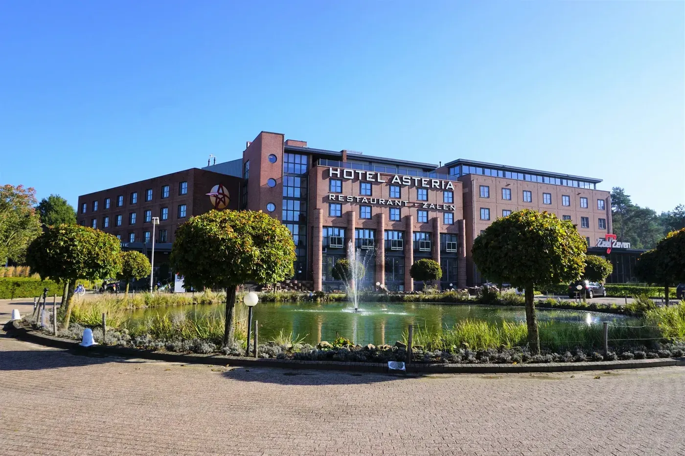
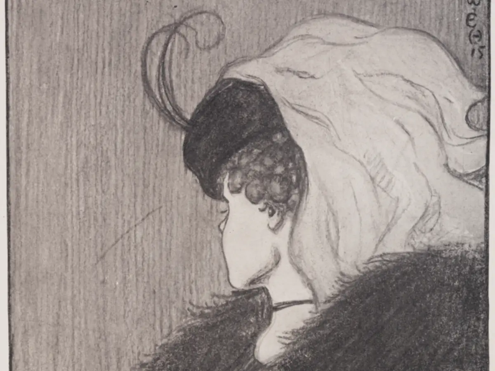
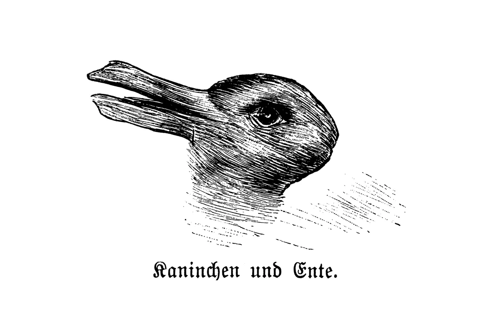
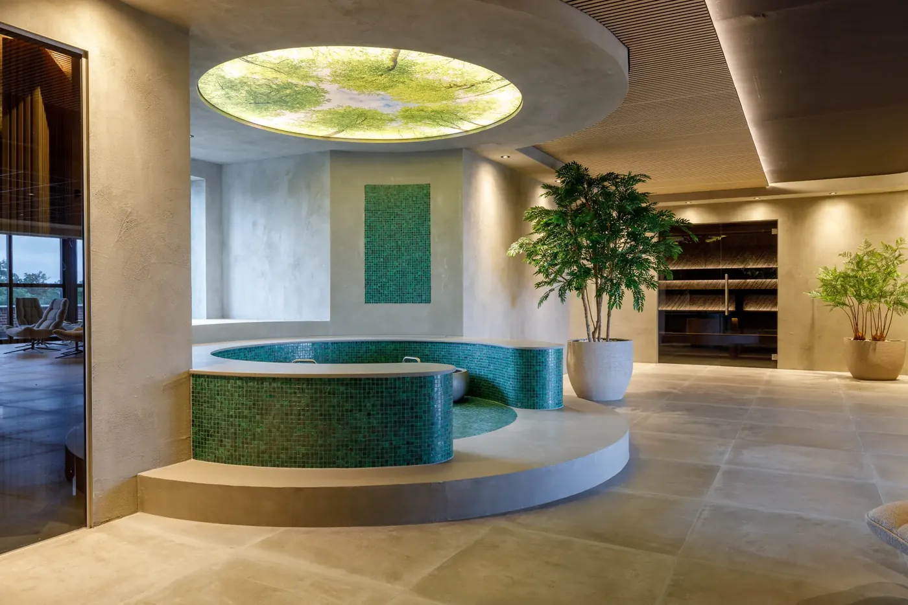
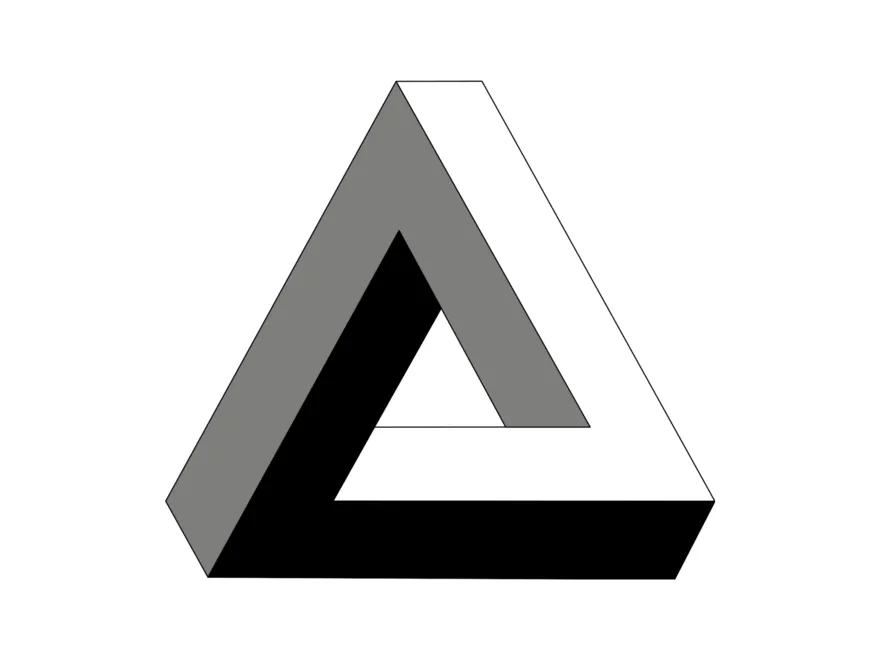
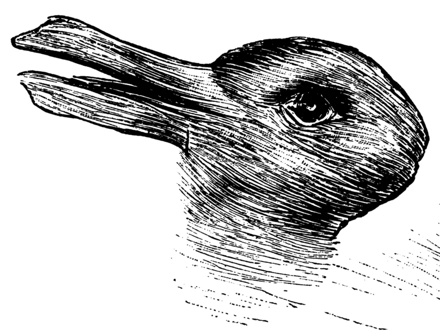
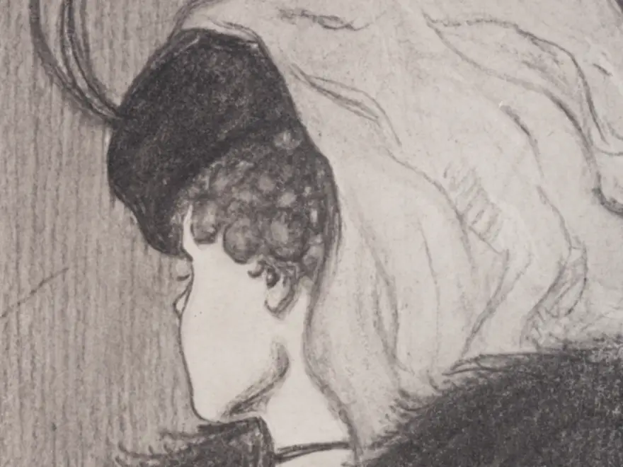
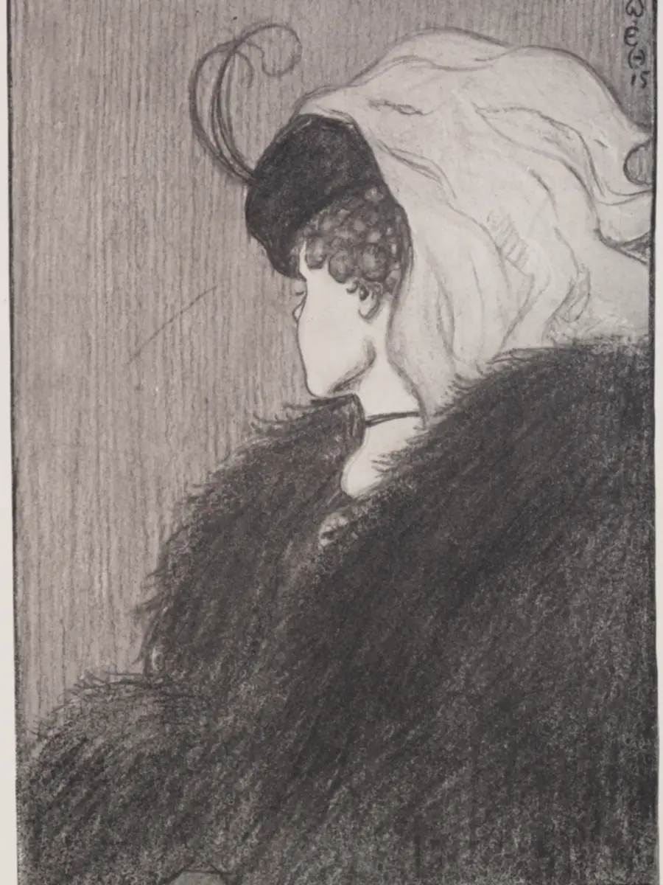
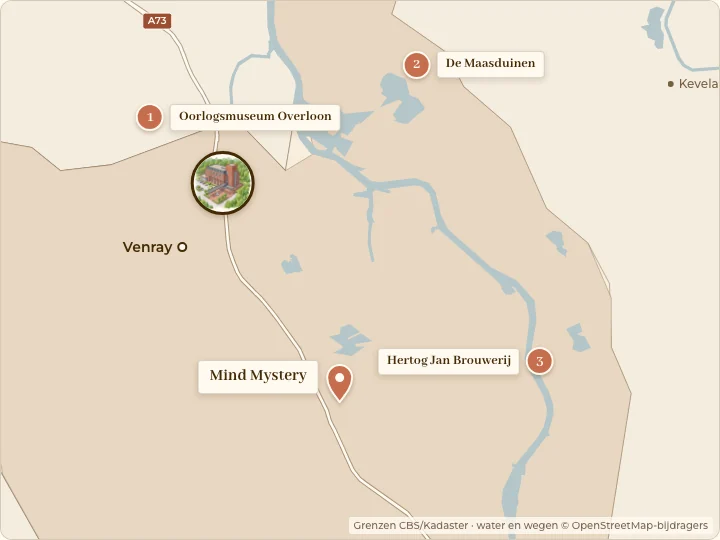
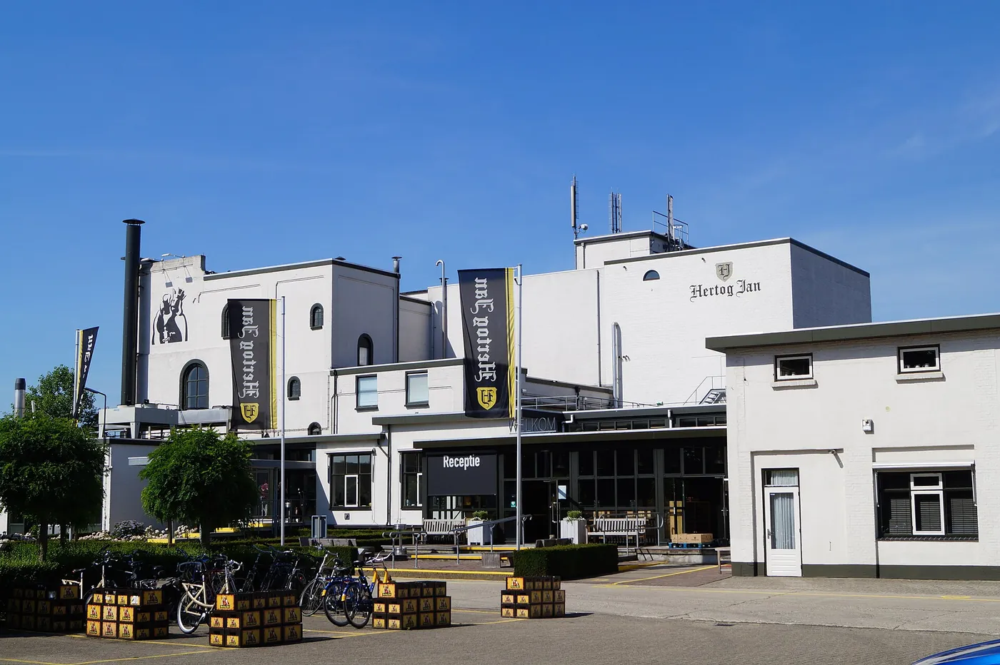

Deluxe kamer
Na een dag buiten kruip je in je eigen sauna en zakt de vermoeidheid langzaam weg.
- 25 m²
- Tweepersoonsbed of twinbeds
- Infraroodsauna
- Max. 2 pers.

Dagje uit
Een belevingsmuseum vol optische illusies in Horst, op tien minuten rijden van je hotelkamer in Venray.

Mind Mystery in Horst ligt op tien minuten rijden van Hotel Asteria. Het is een belevingsmuseum, deels binnen en deels buiten, waar alles draait om optische illusies: wat je ogen zien en wat je hersenen daarvan maken. Het park opende in 2018 en is klein van opzet, met veel te zien op weinig meters.
Je loopt door het Huis op de Kop, waar de meubels aan het plafond vastzitten, en over de brug van de Vortex, een draaiende tunnel waarin rechtdoor lopen opeens lastig wordt. In de Ames Room word je groot of juist klein, en het Reflectiedoolhof staat vol spiegels en kleine dilemma's om samen over te praten.
Alle belevenissen op mindmystery.nl (opent in nieuw tabblad)

In het museum, verdeeld over vijf ruimtes, hangen grafische illusies en hun uitleg. Veel zijn ambigue figuren, zoals de tekening van een konijn dat ook een eend is, voor het eerst gepubliceerd in 1892. In de 3D-ruimte zet je een bril op en komen de schilderijen naar voren.
Buiten wacht een terras met puzzels en breinbrekers. Er zijn vier automatische fotopunten en veel plekken waar je zelf een foto maakt. In het café eet je een belegd broodje of een stuk Limburgse vlaai.

Het grootste deel van Mind Mystery is binnen; alleen de paden tussen de onderdelen en het puzzelterras liggen buiten. Daarmee is het een goede keuze voor een grijze dag. Wie nog tijd heeft, rijdt in een kwartier door naar Arcen voor een rondleiding bij de Hertog Jan Brouwerij. Daarna ben je binnen een half uur terug in Venray, waar de sauna op de Top Floor op je wacht.
Illustraties: W. E. Hill, 1915 en Fliegende Blätter, 1892 (publiek domein), via Wikimedia Commons. Het zijn voorbeelden van illusies uit het museum, niet de werken in Mind Mystery zelf.
Boek een tijdslot aan het begin van de dag. Dan sta je na twee tot drie uur weer buiten, ruim op tijd voor de sauna. Kun je kiezen, ga dan doordeweeks: buiten de schoolvakanties is het rustiger en krijg je € 2 korting per ticket. Je parkeert gratis voor de deur. En laad je telefoon op voor je gaat: in de Ames Room en het Huis op de Kop maak je meer foto's dan je denkt.
Team receptie, Hotel Asteria

In november 2026 op woensdag en vrijdag van 11.00 tot 17.00 uur en in het weekend van 10.00 tot 17.00 uur. Op maandag, dinsdag en donderdag dicht. Je dag controleer je op mindmystery.nl.

€ 18,95 per persoon, kinderen van 5 tot en met 11 jaar € 14,95, tot en met 4 jaar gratis. Doordeweeks buiten de schoolvakanties € 2 korting.

Je parkeert gratis, recht voor de entree. Vanaf afrit 10 van de A73 is het nog geen minuut rijden.
Honden mogen niet mee naar binnen. Hulp- en geleidehonden zijn wel welkom.
Illustraties: Tobias R., Fliegende Blätter, 1892 en W. E. Hill, 1915 (publiek domein), uitsneden; via Wikimedia Commons.




Ontbijten in het hotel, overdag je brein laten foppen in Horst en aan het eind van de middag terug voor de sauna en een diner.
Het ontbijtbuffet staat doordeweeks klaar van 07.00 tot 10.00 uur en in het weekend van 08.00 tot 10.30 uur. Daarna stap je in de auto: tien minuten later sta je in Horst.
Reken op twee tot drie uur voor het Huis op de Kop, de Vortex, het spiegeldoolhof en het museum. Lunch in het café met een broodje of een stuk vlaai.
Terug in Venray laat je je hoofd tot rust komen in de sauna. De wellness is open van maandag tot en met donderdag van 16.00 tot 22.00 uur en van vrijdag tot en met zondag van 12.00 tot 22.00 uur. Dinsdag is badkledingdag.
Je sluit de dag af aan tafel in de brasserie van het hotel. De keuken is open tot 21.30 uur, en je kamer is daarna maar een lift verderop.
Illustratie: W. E. Hill, 1915 (publiek domein), via Wikimedia Commons.
Na een dag vol illusies is een echt bed een prettige gedachte. Kies je kamer; de prijs voor je datums zie je direct bij het boeken.
Na een dag buiten kruip je in je eigen sauna en zakt de vermoeidheid langzaam weg.
Voor wie onderweg is en vooral goed wil slapen. 's Ochtends ga je uitgerust weer op pad.
Een weekend weg, met tijd om je koffer uit te pakken en er even helemaal te zijn.
Om een jubileum of verjaardag te vieren, met een nacht waar je later nog over vertelt.
Na de grote dag, of zomaar een avond voor jullie tweeën: laat het bad vollopen en kom tot rust.
Reis je met z'n drieën, dan sluiten jullie de avond samen af op één kamer.
Ingericht voor gasten in een rolstoel, met extra brede deuren en een aangepaste badkamer.
Mind Mystery ligt ten zuiden van Venray, aan de rand van Horst en vlak bij de A73. Op de kaart zie je ook drie andere uitjes in de buurt van het hotel.

Mind Mystery, Tienrayseweg 10C, 5961 NL Horst
Het is 11,2 kilometer, ongeveer 10 minuten met de auto. Op de fiets is het 10,7 kilometer, zo'n 45 minuten. Fietsen en e-bikes huur je bij onze receptie.
Volgens Mind Mystery duurt een bezoek gemiddeld twee tot drie uur, afhankelijk van je tempo en hoe lang je over de puzzels doet. Je mag zo lang blijven als je wilt.
Ja. Het grootste deel speelt zich binnen af, zoals het Huis op de Kop, het spiegeldoolhof en het museum. Alleen de paden tussen de onderdelen en het puzzelterras liggen buiten.
Dat is verstandig. Mind Mystery werkt met tijdsloten en kan in weekenden en vakanties uitverkocht raken. Een ticket kost € 18,95, voor kinderen van 5 tot en met 11 jaar € 14,95 (november 2026). Je toont de QR-code op je telefoon, en omboeken naar een andere dag is gratis zolang er plek is.
Nee, honden zijn niet toegestaan. Hulp- en geleidehonden zijn wel welkom.
Ja. De wellness is open van maandag tot en met donderdag van 16.00 tot 22.00 uur en van vrijdag tot en met zondag van 12.00 tot 22.00 uur. Dinsdag is badkledingdag. In de brasserie kun je dineren tot 21.30 uur.
 NatuurNationaal Park De Maasduinen15 min autoMeer info
NatuurNationaal Park De Maasduinen15 min autoMeer info 
BrouwerijHertog Jan Brouwerij25 min autoMeer infoFoto's: Lieblingsgouda (CC BY-SA 3.0 NL), B. Hulshoff (CC BY-SA 4.0), bijgesneden; via Wikimedia Commons.

Op tien minuten van Horst wachten je kamer, de wellness op de Top Floor en een tafel in de brasserie.
Boek je verblijf